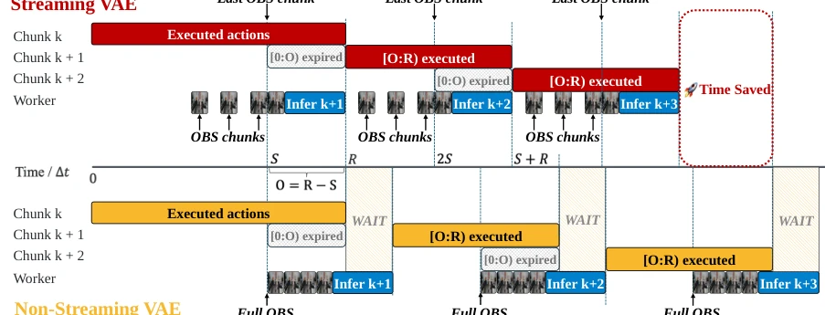
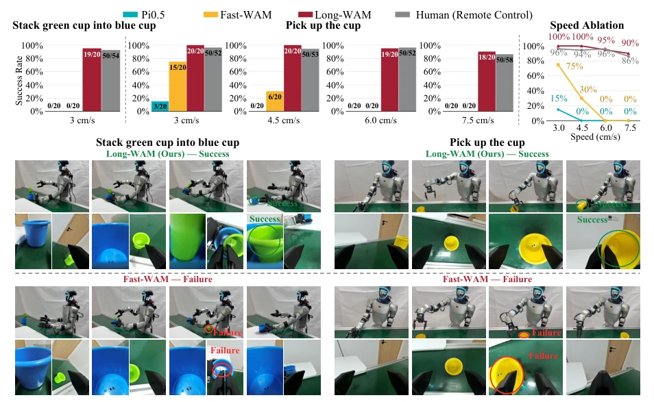
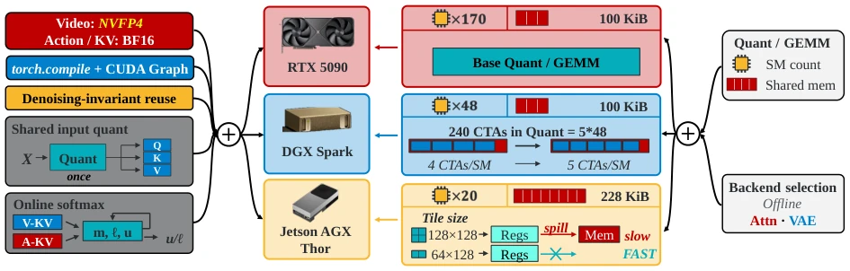
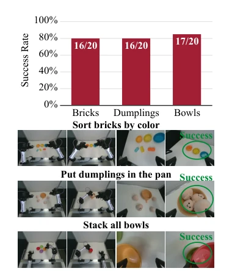
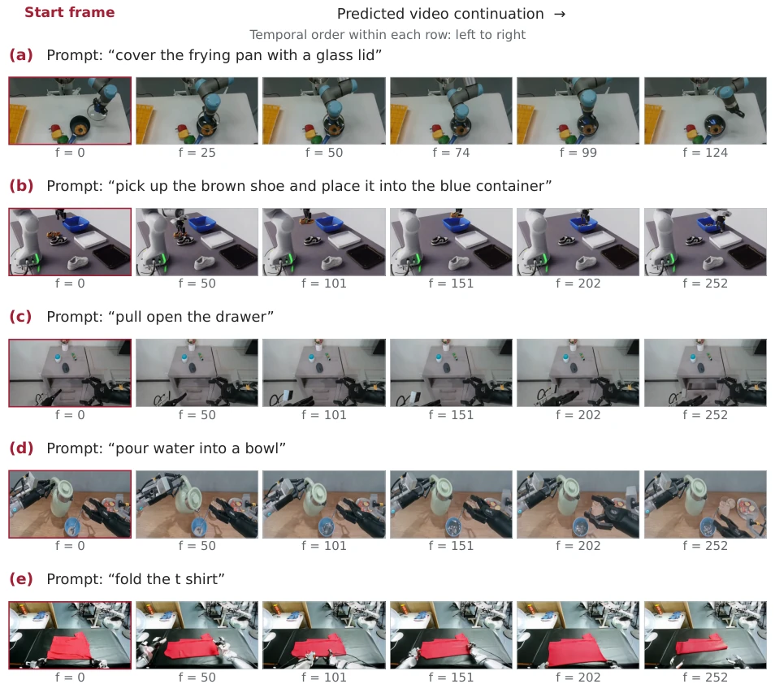
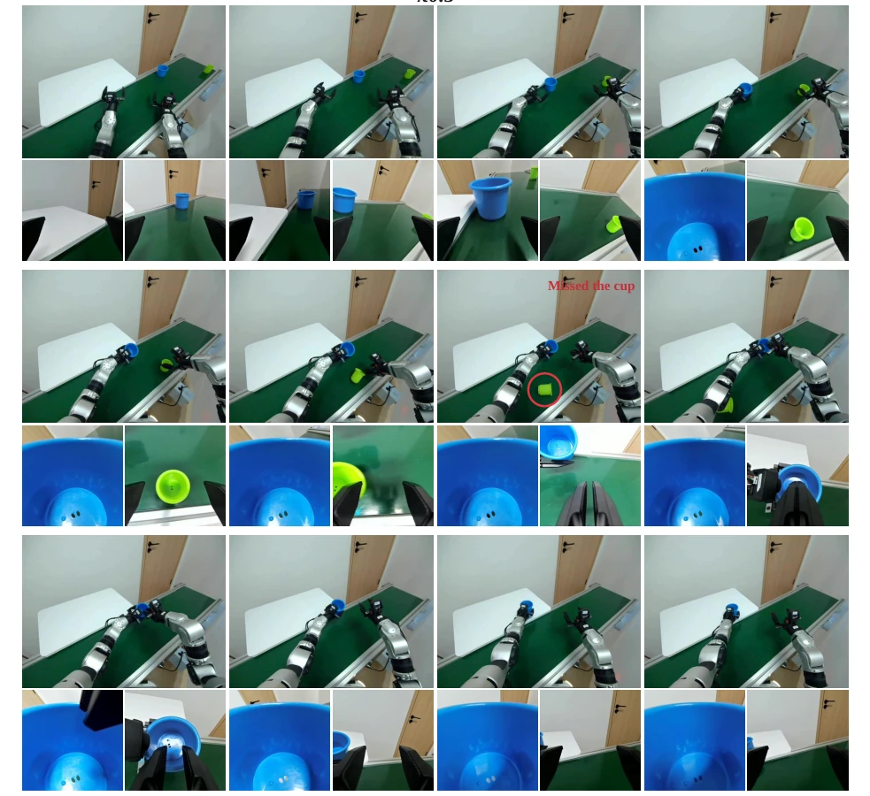
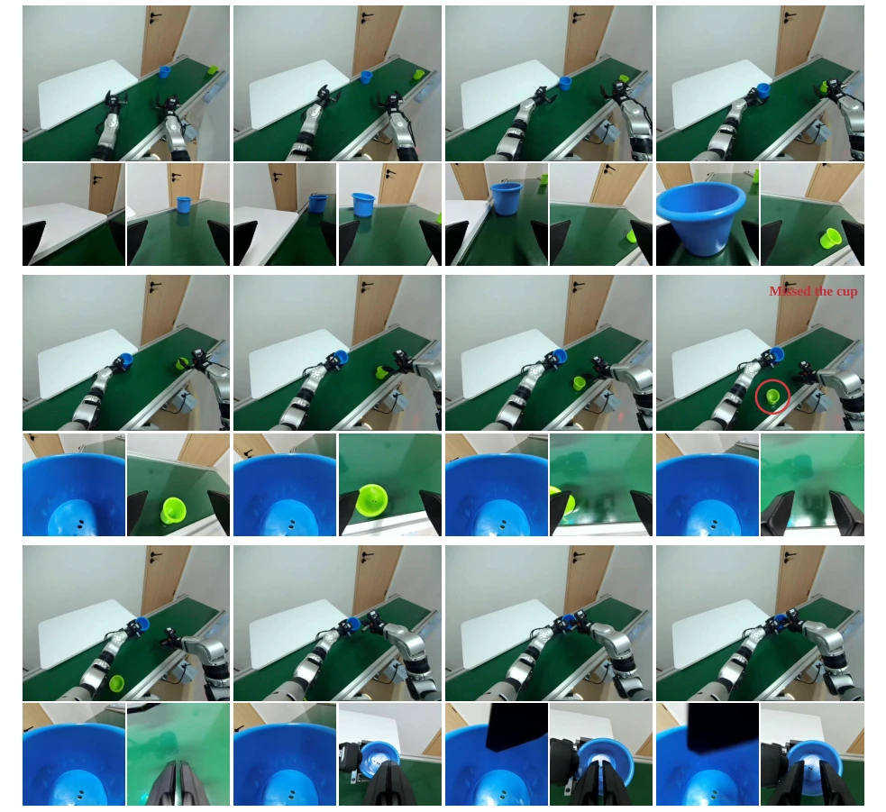

Figure 1 | Overview of Long-WAM. (1) AR video pretraining. LongLive2.0-Robot learns predictive dynamics from approximately 10,000 window-equivalent hours of robot and egocentric videos. (2) Causal-to-causal adaptation. We preserve causal video dependencies while conditioning action-chunk denoising on observed history. (3) Context scaling. Relative to current-observation-only control, success increases from 63.3% to 78.7% on RoboCasa GR-1 and from 94.5% to 99.5% on LIBERO-Long, peaking at 19.2 and 2.4 seconds of history, respectively. (4) Efficient deployment. Asynchronous execution, streaming VAE encoding, decision-time prefill, within-call KV reuse, and hardware-specific acceleration enable real-time control on RTX 5090, DGX Spark, and Jetson AGX Thor.
Figure 2 | Attention patterns and video–action inference strategies. (a) Action generation from the current observation only; (b) history-conditioned action generation without future prediction; (c) joint video–action co-denoising (CoD); (d) video prediction followed by action denoising (IDM). IDM conditions actions on both observed history and predicted future latents, reusing visual KV across action-denoising steps.

Figure 3 | Asynchronous model–robot execution with streaming VAE. Both schedules use the same nominal trigger stride 𝑆and overlap 𝑂= 𝑅−𝑆. Streaming VAE (top) encodes observation (OBS) chunks as they arrive and meets the handoff deadline 𝑇ready ≤𝑂Δ𝑡. Full-window encoding (bottom) delays handoffs and subsequent triggers, accumulating robot idle time. Time is shown in units of Δ𝑡.
Figure 5 | Simulation environments and real-world tasks. Our evaluation spans four simulation bench- marks—LIBERO, RoboTwin 2.0, DOMINO, and RoboCasa—and eight real-world task configurations on G1 and YAM. These include cup pickup at four conveyor speeds, dynamic cup stacking, bowl stacking, brick sorting by color, and dumpling placement into a pan.

Figure 7 | Dynamic manipulation on Unitree G1. Long-WAM maintains 90–100% grasping success across conveyor speeds and achieves 95% success on dynamic cup stacking. Top: policy and human teleoperation comparisons. Bottom: Long-WAM and Fast-WAM rollouts.
其他图片Other Figures

Figure 4 | Optimizations for efficient edge deployment. Shared optimizations and device-specific tuning accelerate edge inference. “Base” denotes the Quant/GEMM implementation; shape-specific dispatch and autotuning remain enabled.

Figure 8 | Long-horizon execution on YAM: 20 trials per task.

Figure 9 | Task-conditioned video prediction with LongLive2.0-Robot. Five selected text-and-image-to-video (TI2V) examples, with the task prompt shown above each row. 𝑓denotes the zero-based frame index. All frames retain the original field of view.

Figure 10 | Dynamic cup stacking with 𝜋0.5. Time progresses left to right within each four-column block, then continues in the next block below; each overview frame is accompanied by two wrist views. The policy grasps the blue cup but misses the moving green cup (red circle), leaving the composite task incomplete.

Figure 11 | Dynamic cup stacking with Fast-WAM. The sequence follows the same reading order as Figure 10. After grasping the blue cup, the policy reaches toward the green cup but misses it as it moves along the conveyor. The subsequent frames show that the nesting stage is not completed.